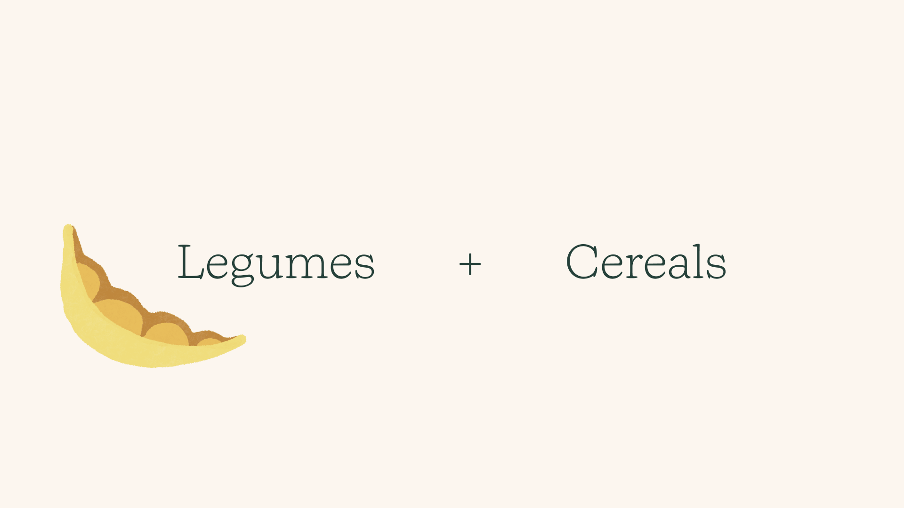
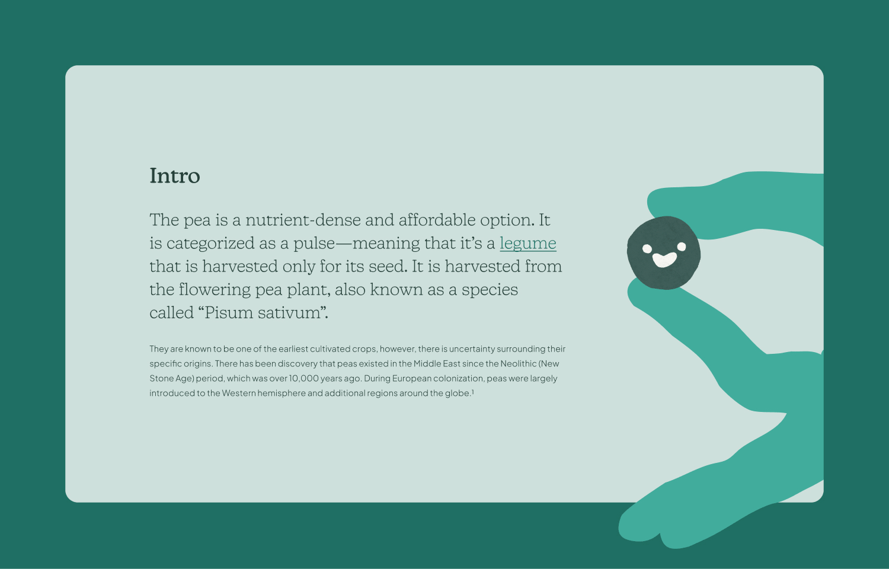
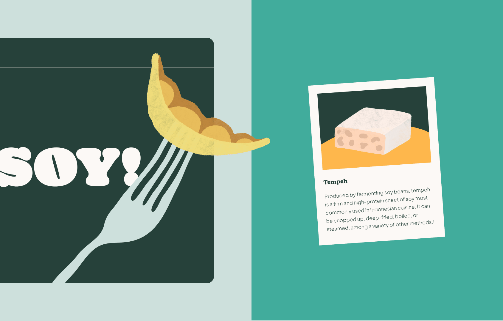
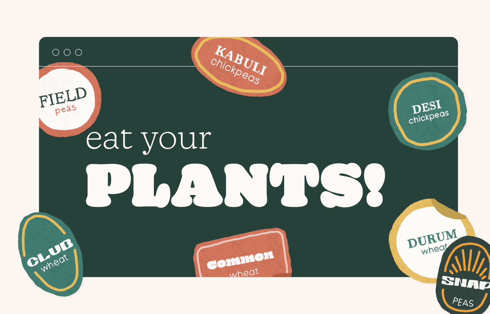

Project Scope
Eat Your Plants! is a website that encourages individuals to explore plant-based options across cuisines and integrate them into their regular diets. Rather than discouraging the consumption of animal-based projects, the project aims to highlight the benefits of plants by targeting consumer wants. When surveyed by the Plant-based Foods Association, 82% of people agree that taste is a major priority when considering food, and 62% expressed the same about cost (McClements & Großmann, 2022). With that in mind, the information on each page showcases the potential flavours of each ingredient, and demonstrates that tasty meals can be accessible and even made at home.
Source: McClements, David Julian, and Lutz Großmann. Next-Generation Plant-Based Foods Design, Production, and Properties. Cham, Switzerland: Springer, 2022.
Problem
Over the past decade, there has been a noticeable increase in plant-based food options presented in grocery stores, restaurants, and fast food chains. Numerous brands that specialize in meat-resembling foods have become household names, however, their popularity has begun to overshadow the simple plant-based ingredients that have existed for millennia. While conducting qualitative research with my peers, individuals stated that factors such as health, taste, and accessibility were barriers preventing them from consuming more plant-based foods.
Approach
I wanted to acknowledge the validity of the concerns surrounding plant-based foods while presenting options that worked for various lifestyles, preferences, and needs. To address the worries surrounding health, I highlighted proteins and amino acids, noting that balanced diets could be achieved through a blend of legumes and cereals. I also showcased a handful of ingredients — featuring nutritional data, methods of preparing them, and recipes from countries across the world.


Key Takeaways
Despite being vegetarian for over seven years, it wasn’t until recently that I started to explore plant-based dishes from international cuisines. I realized that trying new meals was eye-opening and exciting, and I wanted to encourage others to be more explorative with their foods. This project prompted me to challenge my preconceptions and discover factors that deterred individuals from trying plant-based foods. To maximize engagement, I recognized that it would be most effective to feature informative content displayed in playful visuals. Overall, this project highlighted the importance of empathy, research, and fun.

